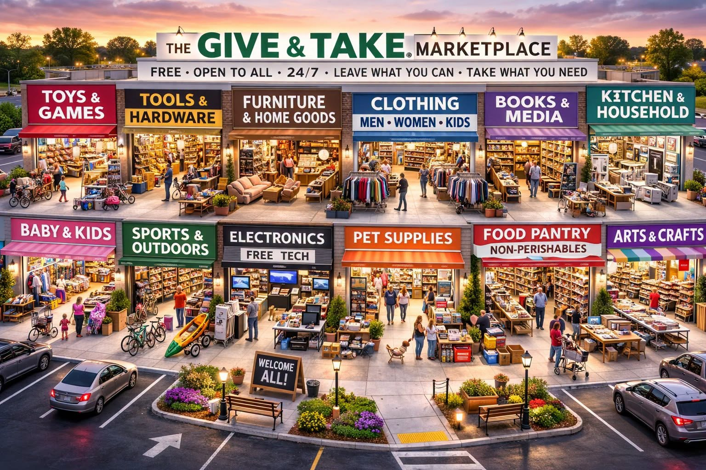

Article #007 · November 2026
The Give & Take Marketplace
Imagine shopping malls where goods are freely shared and everyone can contribute.

By Willis Butts · Terra Nova Development, Inc.
Imagine a shopping mall where everything is free—and everyone has something to contribute.
By Willis Butts • Terra Nova Development, Inc. • November 2026
Concept illustration: a Give & Take Marketplace open to everyone, day and night.
We Already Have So Much
Walk through almost any American neighborhood and you will find closets filled with clothes that are never worn, garages holding tools that are rarely used, and homes containing furniture, toys, books, and appliances that their owners no longer need. Meanwhile, other families struggle to obtain those same things. The problem is not always that the goods do not exist. Often, they are simply in the wrong place, unused and inaccessible.
Terra Nova Development proposes a practical answer: a nationwide network of Give & Take Marketplaces where people freely leave useful items and take what they need. No purchase. No bargaining. No judgment. Just a community organizing its abundance for the benefit of everyone.
Imagine a Different Kind of Shopping Center
Picture an unused strip mall brought back to life. One storefront offers clothing for adults and children. Another holds furniture and household goods. Nearby are shelves of books, toys, sports equipment, kitchen supplies, and tools. A small technology area accepts working computers and phones for safe refurbishment and redistribution. A food pantry offers donated shelf-stable groceries, with appropriate food-safety controls.
Families walk through the center just as they would a conventional shopping mall. They select what they can use, and when they have something to spare, they bring it back. The exchange is voluntary. People who contribute and people who receive are not divided into separate classes; many will do both over time.
The Principle: Leave What You Can. Take What You Need.
The Give & Take philosophy is simple: access to necessities should not depend entirely on someone's ability to pay. Money remains useful for producing, transporting, maintaining, and replenishing goods. But it need not be required for every exchange of an item that already exists and that its owner is happy to give away.
This is not a proposal to seize anyone's possessions or abolish ordinary stores. Every donation would be voluntary. Local businesses could participate by contributing surplus inventory or sponsoring operations. The marketplace would complement commerce by recovering value from items that would otherwise sit unused or be discarded.
Start Small, Then Grow
A Give & Take Marketplace does not have to begin as an elaborate shopping complex. A pilot could start with a donated canopy, tables, shelves, good lighting, and a convenient location offered by a local business. A carefully managed open-air exchange could demonstrate demand at modest cost.
As participation grows, communities could use vacant storefronts, former department stores, or underused malls. Some locations might eventually operate around the clock, provided staffing, security, weather protection, and local regulations make that practical. Each community should adapt the design to its own needs and resources.
How the System Would Work
The marketplace would accept clean, usable donated goods, sort them by category, and make them available without charge. Volunteers and paid staff could inspect donations, maintain displays, keep aisles accessible, and arrange repairs. Clear rules would exclude unsafe products, recalled items, hazardous materials, and goods that cannot be responsibly handled.
For fairness when supplies are scarce, local operators could use transparent quantity limits or reservation systems for high-demand items. Personal dignity and privacy should guide every interaction. No one should have to prove poverty to be treated with respect.
An online inventory could help residents see what is available, request needed items, and locate nearby marketplaces. Delivery partnerships could assist people who cannot travel. Such technology should be optional, not a barrier to participation.
A Second Life for America’s Empty Retail Space
Across the country, commercial spaces have changed as shopping patterns evolve. Some malls and department stores have vacant units that could be repurposed. Rather than letting these spaces deteriorate, communities could negotiate voluntary leases, donations of space, or partnerships with owners.
A former shopping center could become a place where neighbors exchange goods, repair appliances, learn practical skills, share meals, and connect with services. That would give underused property a new community purpose while bringing people back into the area.
The Economics of Shared Abundance
A free marketplace is not cost-free to operate. Rent, utilities, insurance, transportation, staffing, cleaning, security, and waste disposal all require resources. Those expenses should be estimated honestly and funded through donations, sponsorships, grants, philanthropic support, or municipal partnerships where appropriate.
But the potential household savings are real. A donated winter coat, working refrigerator, school desk, or set of tools can meet a need without requiring a new purchase. Reuse can also reduce disposal costs and material waste. A pilot program should measure items redistributed, household savings estimates, operating costs, volunteer participation, and the share of donations successfully reused.
A Community Institution, Not Just a Store
The most exciting possibility is that Give & Take could become a welcoming community institution. Retired tradespeople could teach repair classes. Students could volunteer and learn service skills. Neighbors could organize seasonal exchanges. Local organizations could connect visitors to housing, healthcare, education, and employment resources.
People would not be defined by what they lack, but by what they can share and contribute. The marketplace would become a practical expression of mutual responsibility.
A National Vision
Imagine Give & Take locations appearing in towns and cities across the United States—first as small pilot exchanges, then as larger centers where local support justifies them. Imagine surplus goods moving between communities so that useful items are not wasted while people elsewhere need them.
Terra Nova Development could develop common operating guidelines, volunteer training, safety standards, inventory tools, and a replicable nonprofit model. Local communities would retain control of their own centers. The objective would not be a centralized chain of identical buildings, but a connected network that helps every place use its resources more intelligently.
Abundance Is Already Here. We Need to Organize It.
Our society has learned to manufacture, transport, and sell goods on an extraordinary scale. The next challenge is learning how to share more of what we have already produced.
We do not need to take from those who have. We can invite people to give what they no longer need. We do not need to eliminate money. We can create spaces where money is not the gatekeeper to every useful object. We do not need to wait for a perfect national program. We can begin with one community, one table, one donated item, and one neighbor helping another.
That is the Give & Take Marketplace: an idea simple enough to start tomorrow and ambitious enough to change how we think about prosperity.
There is no them. There is only us. We are one.
Terra Nova Development, Inc. | Support the vision: https://buymeacoffee.com/billbuttso